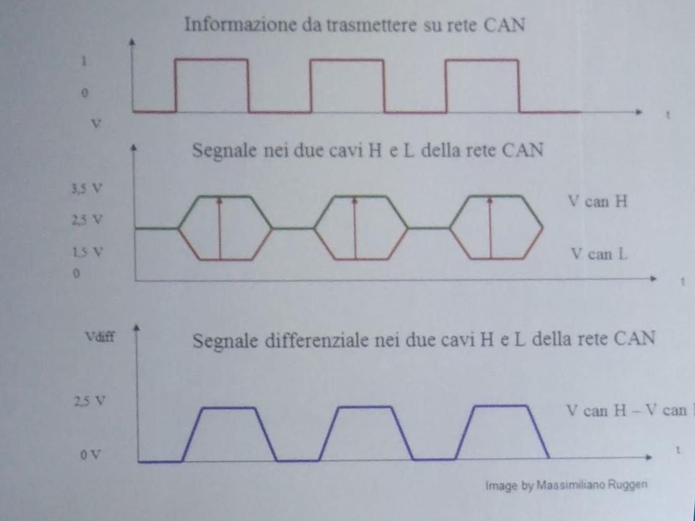
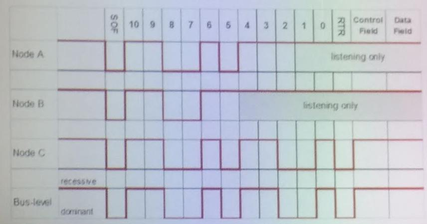

[ alternanza scuola lavoro ]
Sono uno studente dell'Istituto di Istruzione Superiore (IIS) Blaise Pascal di Reggio Emilia, ho 17 anni e ho recentemente avuto modo di sentire sulla mia pelle il disastro che è stata l'Alternanza Scuola Lavoro di quest'anno... Se anche può definirsi "alternanza", dato che la maggior parte del tempo l'abbiamo passata a fare reading in inglese su Ubuntu o ad ascoltare gente in giacca e cravatta che non aveva voglia nemmeno di alzarsi dal letto.
Sono sicuro che la scuola abbia fatto tutto ciò che poteva, anche perché questa cosa dell'alternanza è stata "buttata lì" dallo stato, senza nessun preavviso.
In un'automobile ci sono più centraline che tra di loro comunicano attraverso uno standard “CAN Automotif” (metà standard e metà “libero”). 3 livelli sono obbligatori, altri sono liberi. Ogni funzionalità in una automobile è gestita da una determinata centralina. Tutte queste centraline comunicano tra di loro. Per qualche parte il linguaggio usato è standardizzato, per altre no.
Stessa cosa nei trattori (SAEJ 1939): il trattore ha una rete CAN proprietaria, e anche l'attrezzo.
C'è anche un Terminale Virtuale necessario per interfacciare l'attrezzo e l'utente.
La trattrice, usando un Giunto Cardanico, può trasferire forza meccanica all'attrezzo.
Potenza = coppia * numero di giri [W]
Trattori e attrezzi hanno tutti la stessa PTO a seguito di una UNIFICAZIONE delle stesse.
La risposta? ISOBUS (ISO 11783). ISOBUS permette la comunicazione. Il segnale è differenziale (due cavi per eliminare i disturbi) e i cavi sono twistati (il passo è in base alla frequenza di cui voglio evitare i disturbi (rip italiano)).
I due canali sono CAN HIGH e CAN LOW.
La resistenza deve essere 120Ohm, ovvero la resistenza degli ultimi 3 metri del cavo twistato.
I vari poli del connettore Implement Bus Breakaway Connector (IBBC) sono:
Terminating Bias Circuit (TBC) è…
Nell’IBBC c'è un terminale master (nella trattrice) e uno slave (nell'attrezzo).

ISOBUS multimaster network:

Bus level invertito!
Tractor Electronic Control Unit (TECU) → funge da Gateway fra la rete SAEJ1939 propria della trattrice e il Network ISOBUS.
Cosa vuol dire essere compatibile con un isobus?
Rispettare uno standard software
Rispettare uno standard Hardware
Ecco come si ottiene la CONFORMITA’ ISOBUS
In conclusione lo standard ISOBUS ha varie parti:
Corso di apprendimento informatico per i nostri simpatici nonni!
Questo corso serve a insegnare le basi per usare un computer a chi non ha mai imparato a farlo (soprattutto persone anziane). Il comune e l’istituto si sono uniti per dare vita a questo progetto che ormai va avanti da molti anni e che ha sempre ottenuto molto successo.
I ragazzi prendono il posto dei professori e mettono a disposizione le loro competenze per insegnare. Ogni ragazzo è accoppiato con un paio di nonni, i quali poi segue per tutta la durata del corso. Le lezioni sono interamente organizzate e gestite dai ragazzi usando quello che hanno prodotto nelle ore scolastiche
I ragazzi si sono suddivisi in gruppi di lavoro a scuola, ognuno dei quali ha lavorato ad un progetto differente(presentazione power point, sito internet, registro assenze, questionari di gradimento, eserciziario, fascicolo con la teoria).
L’attività, rivolta a tutte le classi quarte dell’indirizzo informatico, si è svolta nell’aula multimediale della scuola durante tutta la mattinata (8:30 - 12:30), dove alcuni professionisti ci hanno illustrato di quanto l’intelligenza digitale possa essere influente all’interno della nostra vita quotidiana. A proposito della vita quotidiana, un esperto ci ha spiegato di quanto il Lucca Comix sia diventato un evento fondamentale per ambiti in cui si presentano gli ultimi videogiochi e i vari fumetti. Il Lucca Comix attrae ogni anno centinaia di migliaia di utenti da tutto il mondo.
In seguito, i signori hanno suddiviso le classi, presenti all’interno dell’aula, in due, in modo tale che si formassero 8 gruppi. Ad ogni gruppo è stato assegnato un obiettivo progettuale finalizzante un problema differente presentato ad ogni gruppo. I vari obiettivi che si dovevano raggiungere era inerenti il collegamento digitale di vari organi fondamentali all’interno di una città, come per esempio un sensore che ci dicesse che un cassone della spazzatura è pieno, quindi avverte i responsabili della raccolta differenziata. Inoltre, si sono presentati altri problemi come quello del Car Sharing e del Bike Sharing, in cui le persone attraverso un’applicazione riescono a trovare i mezzi adeguati per muoversi all’interno della città. Comunque i vari obiettivi dei gruppi erano quelli di avere una città digitale connessa. Alla fine dell’attività ci è stato proposto di valutare l’attività, con un form su google.
Questo è stata l'ultima attività svolta in ordine cronologico di alternanza scuola lavoro nell'orario. Abbiamo partecipato a questo progetto durato 4 incontri per un totale di 8 ore. L'obiettivo principale di questi incontri è stata la sensibilizzazione rispetto all'argomento migrazione. Ora analizzeremo ogni incontro.
Nel primo incontro abbiamo conosciuto Alessandro ed Elisa che ci hanno accompagnato per tutto l'arco del progetto e abbiamo fatto un giro di presentazioni.
Successivamente attraverso diversi power point ci hanno chiarito meglio le idee definendo in modo chiaro i termini "rifugiato", "richiedente asilo", "clandestino" e "straniero".
Spesso facciamo confusione tra queste 3 parole ma la differenza è grande. Alla fine di ogni lezione ,come vedremo anche negli altri articoli dei successivi incontri, Alessandro ed elisa facevano delle piccole attività/giochi con noi. In questo primo incontro la classe si poneva tutta al centro dell'aula mentre Alessandro ci leggeva un breve testo e la classe doveva scegliere di spostarsi sulla destra in caso fosse d'accordo con le parole appena lette da Alessandro o a sinistra in caso contrario. Uno di quei testi era per esempio: La francia è il paese con più stranierI presenti sul territorio. Siamo rimasti sorpresi poi quando ci hanno rivelato le soluzioni perché spesso ciò che sembrava scontato non lo era. Nel secondo incontro abbiamo simulato prima in solitaria poi a coppie l’esperienza di un viaggio che partiva dall’Africa del nord. Dovevamo inoltre compiere delle decisioni che avrebbero determinato il nostro arrivo in Europa o meno.
Nel terzo incontro abbiamo svolto un’attività molto particolare. Alessandro ed Elisa, prendendo ispirazione dal libro del giornalista Fabrizio Gatti(Bilal) che racconta la sua esperienza vissuta da immigrato clandestino, ci hanno fatto provare l’esperienza di un immigrato in prima persona. Abbiamo quindi simulato lo sbarco a lampedusa di un gommone contenente diversi immigrati provenienti da diversi paesi. Alessandro ha svolto il lavoro dello scafista mentre tutti gli immigrati erano interpretati dai nostri compagni di classe. In questa simulazione era necessaria molta fantasia perché per cimentarsi meglio nell’attività. Altri nostri compagni di classe come Roberto, Amarildo, Gabriele hanno interpretato ruoli come Medico o ufficiale in questura o in ufficio. Alessandro e blu hanno interpretato i poliziotti spesso corrotti. E’ stata un’attività molto particolare e ben fatta visto che abbiamo avuto anche la possibilità di travestirci ed inoltre ci ha fatto riflettere sulle crudeltà che avvengono ad ogni sbarco.
Nell’ultimo incontro del progetto SPRAR abbiamo avuto il piacere di conoscere in prima persona un ragazzo del Senegal, Babacar, di 25 anni circa, che ha affrontato il duro viaggio dall’africa centrale alla Sicilia. All’inizio ci siamo presentati a Babacar mostrandogli su una mappa dell’Italia e del mondo tutti gli spostamenti che la nostra famiglia ha effettuato nella sua storia. Dopo aver raccontato brevemente tutte le nostre storie ha iniziato a documentare la sua vita. Babacar è nato in Senegal ma già da piccolo ha dovuto subire la perdita del padre ed è dovuto andare in Mauritania per seguire la madre che nel frattempo si era risposata. Dalla Mauritania per migliorare le sue ambizioni di vita ha compiuto un viaggio molto lungo e pericoloso attraversando il deserto del Sahara per andare in Libia. Qui però ha incontrato i problemi maggiori. E’ stato più volte imprigionato da alcune bande del posto che chiedevano un riscatto in denaro e così Babacar è stato costretto a chiedere aiuto al suo datore di lavoro. Per questo e altri problemi, Babacar ha deciso di partire verso l’Europa, più precisamente verso Italia. Dopo averci raccontato le difficoltà del viaggio ci ha illustrato quello che ora fa a Reggio Emilia. Babacar è stato molto gentile perchè ha cercato di rispondere ad ogni nostra domanda. E’ stata un’esperienza molto utile ed interessante perché ci ha aperto gli occhi verso una realtà che difficilmente possiamo comprendere.